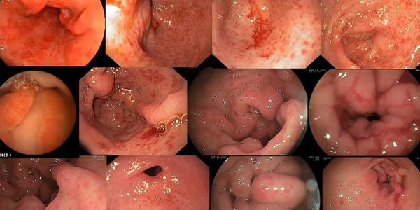
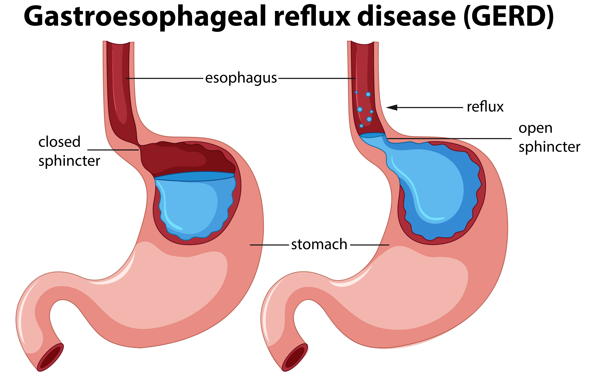

Gastritis: Pathophysiology of the Gastric Mucosa
Definition and Clinical Presentation
Gastritis is defined as the histological identification of inflammation within the gastric mucosa. It is a process occurring when the protective mucosal barrier is compromised, allowing hydrochloric acid and pepsin to cause autodigestion of the stomach lining. Clinical manifestations often include dyspepsia, postprandial fullness, and epigastric pain.
[Image of the stomach lining layers]Etiology and Classification
The condition is broadly classified into Acute and Chronic forms. Acute gastritis often results from erosive agents like NSAIDs or alcohol. Chronic gastritis is frequently secondary to persistent infection by Helicobacter pylori, which induces a chronic inflammatory response.
[Image of Helicobacter pylori bacteria in the stomach]Clinical Types
- Erosive Gastritis: Characterized by mucosal surface depletion and shallow ulcerations often caused by chemical irritants.
- Non-erosive Gastritis: Primarily refers to histological changes induced by chronic H. pylori infection.
- Atrophic Gastritis: Chronic inflammation leading to the loss of glandular cells and intrinsic factor secretion.
- Autoimmune Gastritis: An immune-mediated destruction of parietal cells, linked to Vitamin B12 deficiency.
Advanced Pathophysiological Dimensions
H. Pylori Mechanism
Urease production neutralizes gastric acid, allowing bacterial colonization and triggering cytokine-mediated inflammation.
COX-1 Inhibition
Analysis of how NSAIDs inhibit enzymes, reducing the synthesis of protective prostaglandins that maintain blood flow.
Endoscopic Evaluation
Diagnostic utilization of EGD to visualize erythema, friability, and mucosal regenerative changes.
Correa Pathway & Neoplasia
The progression from superficial inflammation to gastric neoplasia follows the Correa Pathway. This involves a transition from non-atrophic gastritis to multifocal atrophic gastritis, followed by intestinal metaplasia. Molecular markers such as pepsinogen I/II ratios are clinically significant in assessing the degree of mucosal damage and cancer risk.